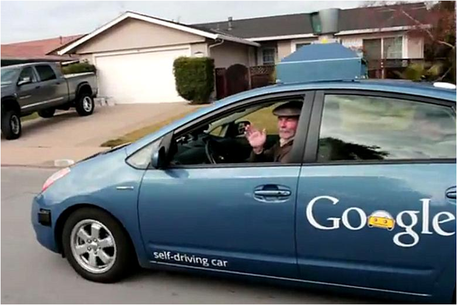

Artificial Intelligence
After the I saw the "The Great Robot Race",
a seven chapter program that features autonomous cars racing in DARPA Grand Challenge 2005,
I was deeply aspired, not only by how well the robot cars can navigate through the desert terrain,
but much more, by the fact that the engineers "taught" the autonomous to drive, and by the potential intelligent robots can bring us in the future.
|
|
|
"Stanley", the winning vehicle of the competition, travelled off road from Barstow to nearly Las Vegas, Primm.
The total distance is approximately 130 miles of desert terrain and Stanley raced through the course averaging about 19 miles per hours.
|
|
Now, Google is using that technology to design driverless car, to help disable individuals who cannot drive to get around,
and to help those who need to drive a lot to get relax in the car.
Other than for our conviences, there are also other benefits to autonomous cars. For instance,
a recent study by Patcharinee Tientrakool of Columbia University in New York estimates that self-driving vehicles,
ones that not only manage their own speed but communicate intelligently with each other,
could increase our highway capacity by 273 percent.
|

|
|
Although autonomous car is a bigger field in Artificial Intelligence, there are a lot more A.I. integrated into our everyday lives.
From Google's search engine algorithm to Roomba, autonomous vacuum cleaner. All these "smart" machines and devices are the product of artificial intelligence".
|
Here are some relevant articles on the Artificial Intelligence:
Check out my opinion/critique on "How artificial intelligence is changing our lives" on my blog page!
To be continued...
|